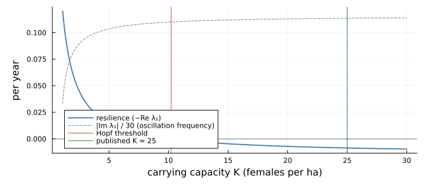
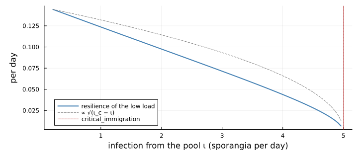

Thresholds and resilience
- The question
- Bsal in fire salamanders: a Hopf bifurcation
- A load that runs away: a fold
- What the two thresholds mean for management
[!NOTE]
Models in this tutorial
Model Source Category API page S–L–I model and its Hopf threshold, SchmidtSLIProblem,hopf_thresholdSchmidt et al. 2017 published api/published.mdLoad tipping and its fold, LoadTipping,critical_immigrationBriggs et al. 2010, modified modified api/load.mdResilience measures DynamicalResilience.jl infrastructure api/resilience.mdCategories: published models reimplement a paper’s equations and are checked against it; modified models add structure to a published model; new models are new structure. Results from modified and new models are not published results.
The question
Most chytrid models are read through thresholds: Bsal invades a fire salamander population above a carrying capacity, and an infection’s load runs away above a rate of infection from the pool. Thresholds say whether a state persists. They do not say how robust it is on the way: how quickly the system returns after a disturbance (a pulse of infection, a bad winter, a treatment that stops), or how close the next threshold is.
That is what resilience measures. Linearise the model at an equilibrium; the Jacobian’s eigenvalue with the largest real part, λ₁, sets the slowest return rate, and resilience is −Re λ₁. Reactivity is the largest initial rate at which a small perturbation can grow before it decays. As a parameter brings an equilibrium to a threshold, its resilience falls to zero: recovery becomes slower and slower (“critical slowing down”), which is what early-warning indicators look for in data.
How resilience reaches zero tells two kinds of threshold apart:
- at a Hopf bifurcation a pair of complex eigenvalues crosses into the right half-plane: the equilibrium persists but becomes unstable and the system starts to oscillate;
- at a fold a real eigenvalue reaches zero as the equilibrium meets an unstable one and both disappear: the system jumps somewhere else.
This vignette uses two models from this package. The machinery is in DynamicalResilience.jl and ResilienceCore.jl; this package supplies only where each model’s equilibria are (equilibrium_state) and which of its terms are new infections.
using Chytridiomycosis, DynamicalResilience, Plots, Printf
using Chytridiomycosis: with
default(; size = (720, 330), titlefontsize = 10, left_margin = 4Plots.mm, bottom_margin = 4Plots.mm)Bsal in fire salamanders: a Hopf bifurcation
Schmidt et al. (2017) model susceptible, latent and infectious adult females with logistic density dependence (carrying capacity K, females per ha). Bsal invades when K exceeds the invasion threshold; above it there is an endemic equilibrium.
R₀ by the general next-generation method of DynamicalResilience, with L and I as the infected states and βSI as the only new infections, agrees with the package’s closed form K / K_threshold:
p = SchmidtParameters(:schmidt2017)
prob = SchmidtSLIProblem(p)
r = reproduction_number(prob)
@printf("R₀ = %.3f (next-generation matrix), %.3f (closed form); K_threshold = %.4f\n",
r.R0, basic_reproduction_number(p), invasion_threshold(p))R₀ = 24.787 (next-generation matrix), 24.787 (closed form); K_threshold = 1.0086Now follow the endemic equilibrium as the carrying capacity rises, from just above the invasion threshold to well beyond the published K = 25. resilience_along finds the equilibrium at each K by Newton’s method, starting from the previous one, and computes resilience (yr⁻¹) and reactivity on the way.
Ks = collect(1.1:0.05:30.0)
start = equilibrium_state(SchmidtSLIProblem(with(p; K = Ks[1])), :endemic)
path = resilience_along(to_ode_problem(prob), (q, K) -> with(q; K = K), Ks; u0 = start)
KH = hopf_threshold(p)
@printf("stability is lost at a %s bifurcation near K = %.2f; hopf_threshold(p) = %.2f\n",
path.transition.kind, path.transition.estimate, KH)stability is lost at a hopf bifurcation near K = 10.21; hopf_threshold(p) = 10.21plot(Ks, path.metrics.resilience; label = "resilience (−Re λ₁)", color = :steelblue, lw = 2,
xlabel = "carrying capacity K (females per ha)", ylabel = "per year")
plot!(Ks, abs.(imag.(path.leading)) ./ 30; label = "|Im λ₁| / 30 (oscillation frequency)",
color = :gray, ls = :dash)
hline!([0]; color = :black, lw = 0.5, label = false)
vline!([KH]; color = :firebrick, ls = :dot, label = "Hopf threshold")
vline!([p.K]; color = :darkgreen, ls = :dot, label = "published K = 25")
i = argmax(path.metrics.resilience)
@printf("most resilient at K = %.2f: %.3f per year, an e-folding return time of %.1f years\n",
Ks[i], path.metrics.resilience[i], 1 / path.metrics.resilience[i])
@printf("oscillation periods 2π/|Im λ₁|: %.1f to %.1f years\n",
extrema(2π ./ abs.(imag.(path.leading)))...)most resilient at K = 1.10: 0.120 per year, an e-folding return time of 8.3 years
oscillation periods 2π/|Im λ₁|: 1.8 to 6.3 yearsThe endemic state is never very resilient. It is most resilient just above the invasion threshold, and even there a disturbance takes years to decay. Resilience falls as K rises and reaches zero at the Hopf threshold. The leading eigenvalues are a complex pair all along the path (the dashed line: their imaginary part, the frequency of the damped oscillations, stays well away from zero), so the return is a slowly damped multi-year oscillation. Beyond the threshold the equilibrium is unstable and Bsal and its hosts cycle. At the published K = 25 the endemic state is past this point.
[!NOTE]
The Hopf threshold here is the package’s
hopf_threshold(p)≈ 10.2, computed from the Jacobian at the verified equilibrium. The paper reports K_H ≈ 9.5; the discrepancy is recorded in the package’s validation registry. The continuation reproduces the package’s value, not the paper’s.
Reactivity of the endemic state shows a second feature. A perturbation can grow at first even where the equilibrium is stable, and here it can grow fast:
stable = path.stable
@printf("stable endemic states with positive reactivity: %d of %d (reactivity %.0f to %.0f per year)\n",
count(path.metrics.reactivity[stable] .> 0), count(stable),
extrema(path.metrics.reactivity[stable])...)stable endemic states with positive reactivity: 183 of 183 (reactivity 61 to 61 per year)Every stable endemic state is reactive: the size of a small perturbation can at first grow at about 61 per year, doubling in about four days, before the slow return sets in. Latent animals become infectious within days (e = 364 per year), long before the host population responds. Stability alone says nothing about how far a small disturbance can push the system first.
A load that runs away: a fold
The load-tipping model is new in this package (not a published model): the Briggs et al. (2010) within-host equation with a saturating clearance by skin defences, dS/dt = ι + (λ − σ) S − c S/(h + S). For a range of infection rates from the pool, ι, a host has a stable low load and an unstable threshold above which the load runs away. At critical_immigration the two meet and the low load disappears. The values of c and h are illustrative.
m = LoadTipping(; ι = 0.5, λ = 0.25, σ = 0.2, c = 20.0, h = 100.0)
ιc = critical_immigration(m)
ιs = collect(0.21:0.05:6.0) # …, 4.96, 5.01, …: ι_c = 5 is not on the grid
setι(q, ι) = LoadTipping(ι, q.λ, q.σ, q.c, q.h, q.κ)
lpath = resilience_along(to_ode_problem(setι(m, ιs[1])), setι, ιs;
u0 = equilibrium_state(setι(m, ιs[1]), :low_load))
@printf("stability is lost at a %s near ι = %.2f; critical_immigration = %.2f sporangia per day\n",
lpath.transition.kind, lpath.transition.estimate, ιc)stability is lost at a fold near ι = 4.98; critical_immigration = 5.00 sporangia per dayok = lpath.converged
plot(ιs[ok], lpath.metrics.resilience[ok]; label = "resilience of the low load", color = :steelblue,
lw = 2, xlabel = "infection from the pool ι (sporangia per day)", ylabel = "per day")
plot!(ιs[ok], sqrt.(max.(ιc .- ιs[ok], 0)) .* lpath.metrics.resilience[1] ./ sqrt(ιc - ιs[1]);
label = "∝ √(ι_c − ι)", color = :gray, ls = :dash)
vline!([ιc]; color = :firebrick, ls = :dot, label = "critical_immigration")
Resilience of the low load falls like the square root of the distance to the threshold, the signature of a fold, and the leading eigenvalue is real all the way. Past ι_c there is no low load at all: Newton’s method finds no equilibrium (the path stops), and in the full model the load runs away to the lethal Smax. Near the threshold a host’s load takes longer and longer to settle after a disturbance, well before any change in its average load would show.
What the two thresholds mean for management
- A Hopf threshold is crossed gradually. Above it the endemic state does not vanish; it starts to oscillate, with growing amplitude. Reducing
K(host removal) below about 10 females per ha would stabilise the endemic state, but only below the invasion threshold (about 1 female per ha) does Bsal fail to invade. - A fold is crossed abruptly. The low-load state is lost entirely, so small increases in zoospore pressure near
ι_ccan tip a host from tolerating infection to dying of it. Its falling resilience, a slower return after a disturbance, is the warning.
These are statements about the deterministic models at their equilibria. The stochastic models in this package (StochasticNestedProblem for Bsal, mean_time_to_runaway for the load) add demographic noise, under which a system near a threshold can cross it early.